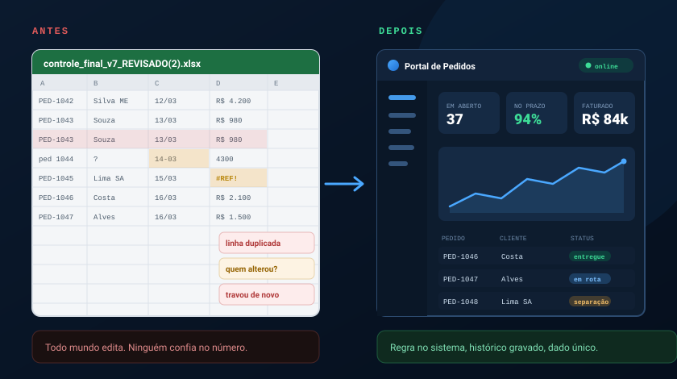
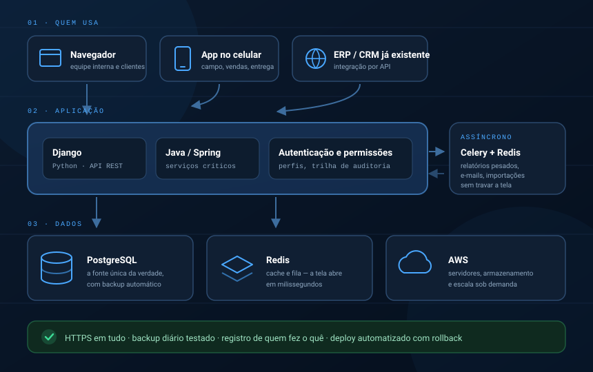
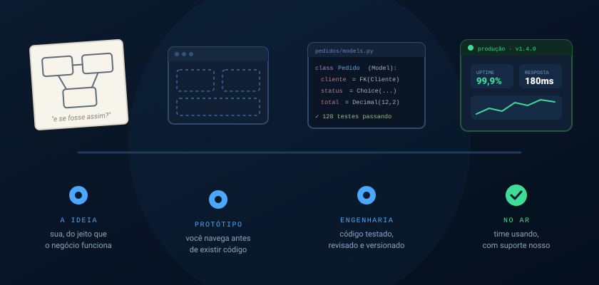

Você já sabe o sistema que a sua empresa precisa. Falta a engenharia.
Aquela ideia que você descreve em cinco minutos e ninguém consegue colocar de pé — o controle que hoje vive numa planilha, o processo que depende de alguém lembrar, o relatório que leva dois dias para sair. É exatamente isso que construímos: software feito para o jeito que a sua operação funciona, não para o jeito que um produto de prateleira acha que ela deveria funcionar.
Se a operação roda numa planilha, ela já está te custando caro.
Planilha não valida nada. Aceita a data errada, a duplicata, o valor colado no lugar da fórmula. Quando o volume cresce, ninguém mais sabe qual arquivo é o certo, e a decisão passa a ser tomada sobre um número em que o próprio time não confia.
Um sistema sob medida resolve isso na raiz: a regra do seu negócio deixa de ser combinada no grupo do WhatsApp e passa a estar escrita no software, aplicada sempre, por todo mundo, com histórico de quem fez o quê.

O que construímos quando dizemos "sob medida".
Sistemas que nascem do seu processo — e que se conectam ao que você já usa, em vez de exigir que você abandone tudo e recomece.
Sistemas de gestão internos
Pedidos, ordens de serviço, estoque, contratos, aprovações. O fluxo da sua empresa virando tela, com as permissões certas para cada perfil.
Painéis e relatórios
O número que hoje leva dois dias e três pessoas para consolidar, disponível em tempo real e sempre calculado do mesmo jeito.
Automação de processos
Importações, conferências, envios, rotinas de fechamento. O trabalho repetitivo passa a rodar sozinho, no horário certo, sem esquecer.
Integrações via API
Conversa com o ERP, o CRM, a emissora de nota, o gateway de pagamento, a transportadora. Um dado digitado uma vez só.
Portais de cliente e parceiro
Seu cliente consulta pedido, segunda via e histórico sozinho. Menos ligação para o seu time, mais autonomia para ele.
Motores de cálculo e regras
Precificação, comissionamento, rateio, simulação. Aquela lógica complexa que só existe na cabeça de uma pessoa, agora executável e auditável.
Tecnologias de ponta, escolhidas por serem maduras — não por serem novidade.
Usamos as mesmas ferramentas que sustentam sistemas de alto volume no mundo inteiro. Isso significa software moderno e sofisticado, com uma vantagem prática para você: são tecnologias consolidadas, com comunidade enorme e documentação aberta. Você nunca fica refém de um fornecedor.
Nenhuma tecnologia é escolhida por moda. A combinação é definida depois de entender o seu problema: volume de dados, número de usuários, integrações necessárias e orçamento. Um controle interno para dez pessoas não precisa da mesma arquitetura de um portal com dez mil acessos por dia — e cobrar como se precisasse seria desonesto.

Rápido, confiável e seguro não são adjetivos. São práticas.
Qualquer fornecedor promete as três coisas. A diferença está em conseguir explicar como cada uma é obtida.
Rápido
Entregamos em ciclos curtos, com uma versão navegável desde as primeiras semanas. Você corrige o rumo cedo, quando ajustar ainda é barato — em vez de descobrir no fim que o sistema não era bem aquilo.
- frameworks maduros: menos código escrito do zero
- entregas quinzenais, sempre funcionando
- deploy automatizado, publicação em minutos
Confiável
Software que quebra a cada atualização não é software: é um passivo. Por isso escrevemos testes automatizados e mantemos o histórico de tudo, para que uma mudança nova nunca derrube o que já funcionava.
- testes automatizados em cada entrega
- código versionado e revisado por outro dev
- backup diário — e restauração testada
- monitoramento com alerta antes do usuário reclamar
Seguro
Seu sistema guarda dado de cliente, preço e margem. Tratamos segurança como requisito desde a primeira linha, não como algo a resolver depois que der problema.
- HTTPS e criptografia em trânsito e em repouso
- perfis de acesso: cada um vê só o que lhe cabe
- trilha de auditoria de todas as alterações
- práticas alinhadas à LGPD
Um time formado em grandes empresas do cenário nacional.
Nossa equipe é composta por profissionais altamente qualificados, com passagem por grandes companhias brasileiras — ambientes onde sistema fora do ar significa prejuízo imediato e onde não existe espaço para improviso. É esse padrão de engenharia que trazemos para projetos de qualquer porte, inclusive o seu.
Na prática, isso quer dizer que a sua empresa não vai receber um experimento. Vai receber as mesmas práticas — arquitetura, revisão de código, testes, controle de versão, monitoramento — que sustentam operações críticas, aplicadas na medida certa para a sua realidade.
Escala de verdade
Quem já lidou com sistemas de alto volume sabe onde as coisas quebram. Esse repertório evita, no seu projeto, os erros que só aparecem quando a operação cresce.
Interlocução direta
Você conversa com quem está construindo o sistema, não com um intermediário comercial. Menos ruído entre o que você precisa e o que é entregue.
O código é seu
Entregamos o repositório, a documentação e os acessos. Se um dia você quiser levar o projeto para outro time, ele vai embora com você.
Como a sua ideia vira um sistema em produção.

Entender
Sentamos com quem executa o processo hoje. Antes de propor tela, precisamos entender a regra e a exceção.
Desenhar
Escopo, arquitetura e protótipo navegável. Você clica no sistema antes de existir uma linha de código.
Construir
Desenvolvimento em ciclos curtos, com entregas testadas e um ambiente para você validar continuamente.
Publicar
Infraestrutura, migração dos dados existentes, treinamento do time e acompanhamento de perto na virada.
Evoluir
Suporte, correções e novas funções conforme o negócio muda. Sistema bom é aquele que continua acompanhando.
Traga a ideia. Nós dizemos como ela fica de pé.
Não precisa chegar com especificação pronta, nem saber o que é API ou banco de dados. Basta descrever o problema — o que trava hoje, quem sofre com isso, o que você gostaria de ver numa tela. Na primeira conversa já devolvemos uma leitura técnica honesta: o que dá para fazer, por onde começar, quanto tempo leva e quanto custa. Se o melhor caminho for uma solução mais simples que a nossa, dizemos isso também.